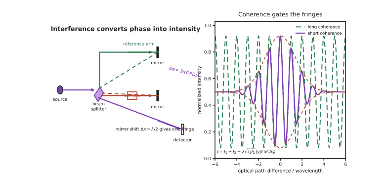

本页目录
光学 III · 干涉与相干性
层次：本科核心 ｜ 与物理站的分工：🔗 物理站
opt-01给出干涉衍射的物理推导；本页讲工程用途——干涉如何成为最精密的测量手段，以及"相干性"这个常被一笔带过、却处处决定设计的概念。 把光当作波，立刻得到几何光学永远给不出的东西：用光的波长作尺子。
学习层：相位只有在可见度账本里才变成测量
1. 具体谜题：为什么两束一样亮的光也可能没有条纹？
迈克尔逊干涉仪在探测器处合并两束光，各自强度 \(I_1=I_2=1\)。若相位差为 \(\Delta\varphi=0\)，你会预测探测器读到 0、1 还是 4？若把其中一束旋转成与另一束正交的偏振，强度总和仍是 2，但条纹会不会保留？再把白光的谱宽从 \(10\,\mathrm{nm}\) 换成单频激光的 \(0.001\,\mathrm{nm}\)，允许的光程差会扩大还是缩小？
2. 先预测：哪一个旋钮改变条纹，哪一个只改变底座？
先写下四项预测：① 在 \(|\gamma|=0.6\)、两束等强时，最大/最小强度与可见度是多少；② 两臂强度变成 \(I_1=4,I_2=1\) 后，完美相位稳定能否恢复 \(V=1\)；③ 若移动一臂 \(0.25\,\mu\mathrm m\)、波长为 \(0.5\,\mu\mathrm m\)，相位周期走过几分之一；④ 相干长度只有 \(5\,\mu\mathrm m\) 时，光程差 \(20\,\mu\mathrm m\) 还能否给出稳定包络。实验先收下预测，再显示相位、可见度与包络。
3. 最小 mental model：振幅叠加，探测器读平方
把每一路看成复振幅 \(E_k=\sqrt{I_k}e^{i\varphi_k}\)。在探测器处先相加，再取模平方；因此相位差只会通过交叉项进入强度。相干性 \(\gamma\) 是对有限带宽、时间漂移和空间不一致的压缩描述：它把“相位能不能被共同预测”变成 0 到 1 的可设计量。
4. 正式机制：可见度、相干长度与条纹计数
时间相干长度近似为 \(L_c=c/\Delta\nu\approx\lambda^2/\Delta\lambda\)。迈克尔逊中反射镜移动 \(\Delta x\) 造成往返光程变化 \(2\Delta x\)，每当 \(2\Delta x=\lambda\) 就走过一个条纹周期。\(V\) 是相位信息可被强度读出的幅度证书；它不是“亮度高低”的同义词。
5. 静态实验：把相位翻译成强度
无 JavaScript 时的静态读法：默认 \(I_1=I_2=1\)、\(|\gamma|=0.6\)，于是
若改为 \(I_1=4,I_2=1\)，则 \(I_{\max}=7.4\)、\(I_{\min}=2.6\)、\(V=0.8\times0.6=0.48\)；相位仍稳定，但光束不平衡损失可见度。对于 \(\lambda=0.5\,\mu\mathrm m\)、\(\Delta\lambda=0.05\,\mathrm{nm}\)，\(L_c\approx5\,\mathrm{mm}\)；移动反射镜 \(0.125\,\mu\mathrm m\) 产生半个相位周期。脚本可切换光强、相干度、相位和光谱宽度，逐帧显示两路振幅、探测器强度与白光相干包络，并数出条纹；它不会模拟真实激光器。
6. 反例与边界：有相位公式不等于有可测条纹
- 两个独立激光器不自动相干。即使中心频率相同，随机相位漂移也会令时间平均的交叉项趋近零；分束同一光源是共模相位稳定的工程选择。
- 强度平衡只影响上限。\(I_1\neq I_2\) 时最大可见度已经小于 1；增加总功率不能绕过不平衡、偏振正交或光程超出 \(L_c\)。
- 低相干不是失败。白光条纹只在光程匹配的窄包络内出现，正因为包络短才给出绝对位置；激光长相干长度适合相对位移，但可能有周期歧义。
- 条纹计数仍需标定。振动、空气折射率、偏振泄漏和相位展开错误都可能把条纹数变成错误距离；干涉仪的灵敏度不替代实验控制。
7. 迁移题：为测量目标选择相干性
若要测量透明薄膜的绝对厚度、长行程台的相对位移和 OCT 的深度反射，分别选白光、稳频激光还是低相干 SLD？请为每种选择写出所需的 \(L_c\)、条纹歧义处理和探测器读出，并指出何时应牺牲可见度换取绝对定位。

一、干涉的条件
两束光叠加：
关键在第三项——它携带相位信息，也决定条纹的可见度：
产生稳定干涉需要：频率相同、相位差稳定、偏振不正交、光程差在相干长度内。
注意"相位差稳定"：两个独立的激光器难以稳定干涉，因为它们的相位各自随机漂移。所以干涉仪几乎总是把一束光分成两束——这样相位噪声共模抵消。
二、相干性：一个工程量
这是本页最重要的概念。 相干性不是"有或没有"，而是一个可以量化、可以设计的量。
时间相干性（决定能承受多大光程差）：
| 光源 | 相干长度 | 用途 |
|---|---|---|
| 白光（LED） | 几 μm | 白光干涉：绝对定位、表面形貌 |
| 低相干 SLD | 几十 μm | OCT 断层成像（第十七页） |
| 多模激光二极管 | 毫米–厘米 | 一般测量 |
| 单频激光（稳频） | 米–千米以上 | 长程干涉测量、引力波探测 |
空间相干性（决定光源可以多大）：由光源尺寸与距离决定，用 van Cittert–Zernike 定理描述。这直接关系到能否做出清晰的干涉条纹与衍射图样。
一个反直觉但极重要的工程事实：低相干不是缺点，而是一种资源。
- 白光干涉：只有在光程严格相等时才有条纹 → 提供绝对零点，可测量绝对距离与台阶高度（激光干涉只能测相对变化）；
- OCT：低相干使得只有特定深度的反射回波才能干涉 → 实现深度分辨，这就是眼科断层扫描的原理。
"选择合适的相干长度"是光学系统设计的一项主动决策，而非被动接受。
三、干涉仪：光学计量的核心
迈克尔逊/泰曼-格林：分束、两臂、合束。移动一臂，每移动 \(\lambda/2\) 产生一个条纹周期。
这就是"用波长做尺子"：可见光 \(\lambda\approx0.5\) μm → 条纹计数的分辨率就是亚微米，配合细分可达纳米级。
主要应用：
- 位移与长度计量：激光干涉仪是精密机床、光刻机工件台的位置基准（🔗 微电子站、机械站超精密加工）；
- 面形检测：斐索干涉仪测量透镜与反射镜的面形误差，精度到 \(\lambda/20\) 甚至更好——这是光学制造的验收手段，没有它就没有高端光学；
- 折射率与厚度测量；
- 引力波探测：干涉臂长变化的探测灵敏度达到极小的量级，是人类构建过的最灵敏的测量装置之一。
其他重要形式：
- 马赫-曾德尔：两路分离，便于在一臂插入样品 → 光调制器的标准结构（第八、十五页）；
- 法布里-珀罗（F-P）：多光束干涉，精细度 \(\mathcal{F}\) 越高，透射峰越窄 → 激光谐振腔、光谱分析仪、窄带滤波片（第七页）；
- 萨格纳克：环路，对旋转敏感 → 光纤陀螺仪（惯性导航，🔗 自动化站）。
四、薄膜光学：无处不在的干涉
多层介质膜利用干涉控制反射与透射，是现代光学的隐形基础设施：
-
增透膜（AR）：单层膜条件——\(n_{\text{膜}}=\sqrt{n_0 n_s}\)、厚度 \(\lambda/4\)。多层宽带增透可把反射率从 4% 降到 0.1% 以下； 为什么重要：一个 10 片透镜的镜头有 20 个界面，每面 4% 反射意味着只有 \(0.96^{20}\approx44\%\) 的光能通过，且杂散光造成严重眩光。镀膜技术的出现，是复杂镜头得以实用的前提——这是一条被低估的技术史线索；
-
高反膜（HR）：多层 \(\lambda/4\) 堆叠，反射率可达 99.99% 以上 → 激光腔镜；
- 分色镜/滤光片：荧光显微、投影、相机的分色棱镜；
- 陷波与带通滤波：拉曼光谱必需。
设计方法：特征矩阵法（每层一个 \(2\times2\) 矩阵连乘——与第一页的光线矩阵、机械站的传递矩阵是同一种数学结构），再用优化算法确定各层厚度。
五、全息与干涉的信息记录
全息术（Gabor，诺奖）：用参考光与物光干涉，把相位信息编码为强度条纹记录下来；再照明时衍射重建波前。
核心思想极其重要：探测器只能测强度，不能测相位（第九页会再强调）。干涉是把相位"翻译"成强度的通用手段——全息、干涉测量、相位恢复、光学相干层析、相干光通信（第十三页），全都建立在这一个思想上。
现代形式：
- 数字全息：用图像传感器记录、计算机重建；
- 计算全息（CGH）：计算出所需干涉图并制成器件，用于非球面检测（给出任意参考波前）与全息显示。
六、要点
- 相干性是可量化、可设计的工程量；低相干不是缺点而是资源（白光干涉的绝对零点、OCT 的深度分辨）；
- 干涉仪用波长做尺子，是精密计量与光学面形检测的基础；
- F-P 的高精细度给出窄透射峰（谐振腔、滤波）；萨格纳克用于光纤陀螺；
- 薄膜干涉是现代光学的隐形基础设施——没有增透膜就没有复杂镜头；
- 干涉的普遍意义是"把相位翻译成强度"——全息、相位测量、相干通信共享这一思想。
下一页：衍射。它给出几何光学永远给不出的东西——分辨率的物理极限；而傅里叶光学则揭示了一个惊人的事实：一枚透镜在做傅里叶变换。